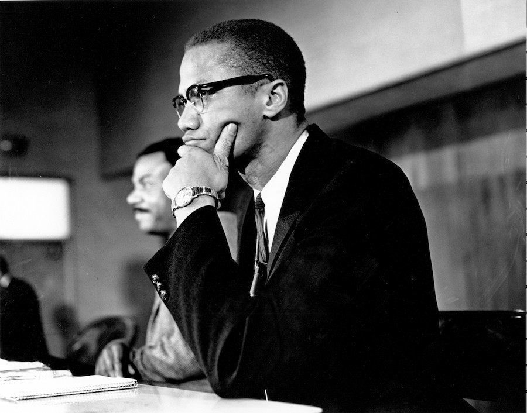

Malcolm X
"The future belongs to those who prepare for it today."

Photo: Michael Ochs Archives/Getty Images
Malcolm X (1925–1965) was an American Muslim minister and human rights activist. To his admirers he was a courageous advocate for the rights of blacks, a man who indicted white America in the harshest terms for its crimes against black Americans; detractors accused him of preaching racism and violence. He has been called one of the greatest and most influential African Americans in history.